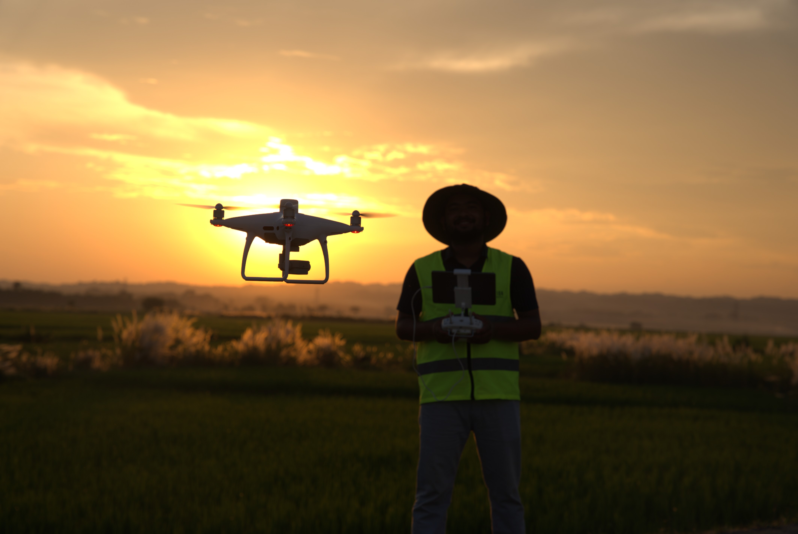
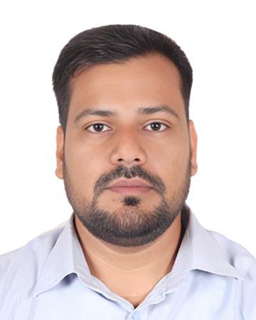
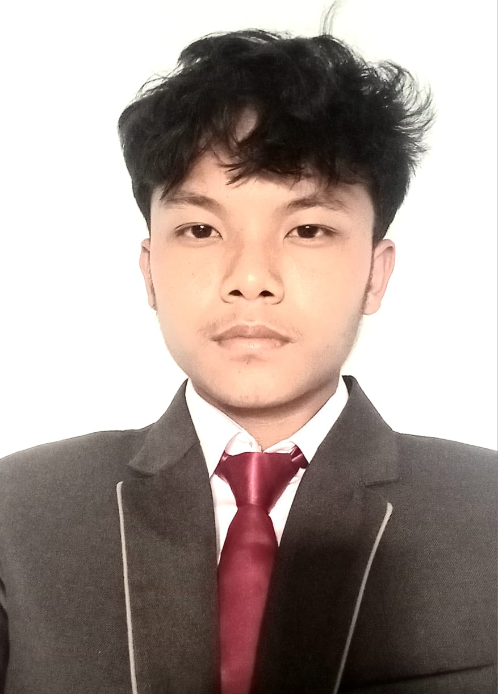

Leadership

Lalit BC
Co-founder and PI
Specializing in Geospatial Technologies, Drones and Precision Agriculture. MS in Agricultural and Remote Sensing with 6+ years of experience in research and field applications. Passionate about leveraging technology for sustainable agriculture and rural development.
Senior Researchers

Asst. Prof. Krishna Aryal
Senior Agricultural Technologist
Specializes in soil science and irrigation management. 10+ years of experience in agricultural research and development. He is currently working as an Assistant Professor at the IAAS, Rampur Campus, Chitwan, Nepal..
ML/AI Specialist
Machine Learning & Computer Vision
Develops AI models for image classification and decision support systems. Python & deep learning expert.
Research Associates

Milan Titung Tamang
Undergrad Researcher
Mr. Tamang is an undergraduate student at Agriculture and Forestry University pursuing a B.Sc. Agriculture. He is working in the lab and on field data collection for our HelioNet Project, which is a collaboration between AFU and AIR Lab.
Santosh R. Joshi
Undergrad Researcher
Conducting ground-truth measurements and field validations across study areas. He is currently working with the HelioNet Project, a collaborative initiative between AIR Lab & AFU focused on computer vision and Sunflower research in Nepal.